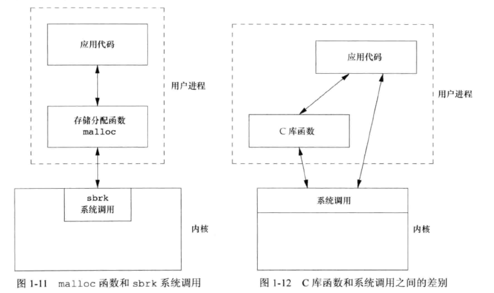

此为书中第一章的笔记
用户
系统的口令文件由7个冒号分隔的字符组成，依次是
- 登录名
- 加密口令
- 数字用户ID
- 数字组ID
- 注释字段
- 起始目录
- shell程序
1 | parallels:x:1000:1000:Parallels,,,:/home/parallels:/usr/bin/zsh |
user ID用于表示系统中的不同用户，0为root用户group ID用户组表示。同一个用户组中的成员可以共享资源。信息存放在/etc/group中
以上两个值可以在程序中通过 getuid 和 getgid 获得。
文件与目录
创建目录时会自动创建两个文件名：.（当前目录）和 ..（上一级目录）
以下为使用一些系统库函数打印指定目录下的内容
1 |
|
编译运行
1 | gcc ls_test.c -LDIRECTORY $EXTERNAL_FILE_PATH/error.c |
系统头文件 dirent.h 包含 opendir、readdir 函数原型的定义，以及结构体 dirent 的定义。
I/O
文件描述符（file descriptor）：内核用以标识一个特定进程正在访问的文件。当运行一个新程序时，shell会为其打开三个文件描述符：
标准输入（standard input）0标准输出（standard output）1标准错误（standard error）2
重定向
可以对这三个做重定向处理
编写如下文件
1 |
|
编译该程序
1 | gcc ls_test.c -LDIRECTORY $EXTERNAL_FILE_PATH/error.c |
运行时
1 | # 将stderr重定向至一个文件 |
不带缓冲
函数 open 、 read 、 write 、 lseek 以及 close 提供不带缓冲的I/O。使用文件描述符
下列程序将shell输入变成shell输出
1 |
|
头文件 unistd.h 包含了预定义的 STDIN_FILENO 、 STDOUT_FILENO 以及函数原型 read 和 write 。
其中，预定义的两个文件描述符如下
1 |
非常清楚，分别为0、1、2 。
编译该程序
1 | gcc ls_test.c -LDIRECTORY $EXTERNAL_FILE_PATH/error.c |
可以直接从命令行中输入，也可以进行复制文件的操作，如下
1 | ./a.out < ls_test.c > ls_test_test.txt |
带缓冲
无需自己指定缓冲区的大小，如 fgets 读取完整的一行，而 read 需要指定读取字节的数量
1 |
|
编译
1 | gcc ls_test.c -LDIRECTORY $EXTERNAL_FILE_PATH/error.c |
可以实现和之前的函数相似的功能。其中函数原型 ferror 、 putc 和 getc 以及 EOF 、 stdin 和 stdout 都在头文件 stdio.h 中定义。
程序和进程
程序（program）为一个可执行文件。内核使用exec函数将程序读入内存并执行进程（process）为程序的执行实例进程ID（process ID）每个进程的唯一的数字标识符
以下程序打印当前程序的PID
1 |
|
编译运行
1 | gcc ls_test.c -LDIRECTORY $EXTERNAL_FILE_PATH/error.c |
每次运行的得到的PID是不一样的，类型为 pid_t ，并不知道其大小，仅知道标准会确保其能保存到一个长整型中。
下列程序会启动一个子进程，执行用户输入的指令
1 |
|
这里的 fork 函数，对于子进程返回值为0，对于父进程返回值为子进程的PID
出错处理
出错的信息都定义在 errno.h 以及 errno-base.h 中
string.h 中定义了两个函数用于打印错误 strerror 和 perror
前者传入 errno.h 定义的类型，可以打印其代表的值；后者首先打印传入的参数值，随后打印 errno 对应的值。例子如下：
1 |
|
编译
1 | gcc ls_test.c -LDIRECTORY $EXTERNAL_FILE_PATH/error.c |
打印的结果如下
1 | EACCESS: Permission denied |
同时注意，有些错误是可以恢复的，比如网络暂时无法连接、共享资源暂时不可用等。
时间值
- 日历时间：1970.1.1 00:00:00（UTC）之后所经历的秒数，用
time_t存储 - 进程时间（CPU时间），用
clock_t存储- 时钟时间：进程运行的时间总量
- 用户CPU时间：执行用户指令所用的时间量
- 系统CPU时间：进程执行内核程序所经历的时间
- CPU时间 = 用户CPU时间 + 系统CPU时间
系统调用和库函数
UNIX所使用的技术是为每个 系统调用 在标准C库中设置一个具有同样名字的函数。用户进程用标准C调用序列来调用这些函数，然后，函数又用系统所要求的技术调用相应的内核服务。
对于通用 库函数，虽然有些函数可能会调用一个或多个内核的系统调用，但是它们并不是内核的切入点。
内核中的系统调用分配一块空间给进程，而库函数malloc则在用户层次上管理这一空间。
